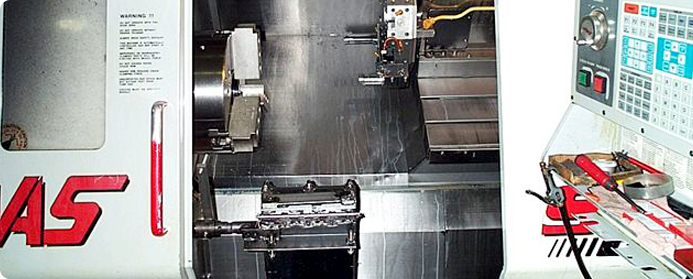

Turning
Turning is the process whereby a single point cutting tool is parallel to the surface. It can be done manually, in traditional form of lathe, which frequently requires continuous supervision by the operator, or by using a computer controlled and automated lathe which does not.
The majority of our turning operations are performed on our precision CNC Lathes. There are many advantages to using CNC machining as it is more precise than manual machining and can be repeated over and over in the exact same pattern. This process can produce complex shapes that would almost be impossible to achieve with manual machining.
All of our CNC Lathes are equipped with bar feeders which reduce load time and increase machine efficiency. Quick setups make CNC Lathes ideal for all size production runs.
Machines
- OKUMA CNC – Lathe with bar feeders up to 2-1/2" capacity.
- AMERA – SEIKI CNC Lathe 2 - 1/16" diameter capacity with bar feeder.
- HAAS SL – 30 Big Bore CNC Lathe 4" diameter capacity with bar feeder.
- OKUMA CROWN CNC – Lathe with up to 2-1/2” bar feed capacity
